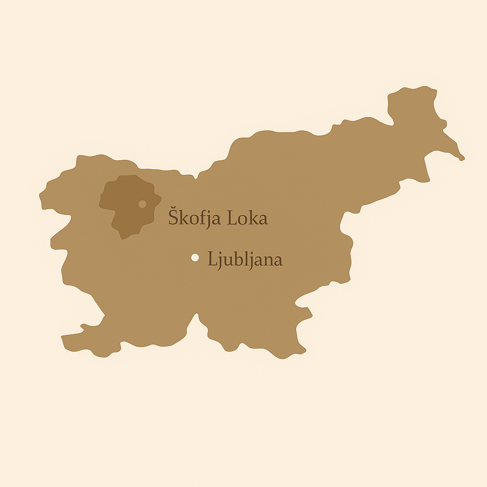

Ena Loka, dve dolini, tri pogorja, neskončno zgodb
Vir: visitskofjaloka.si
Sredi Slovenije, kjer se Alpe že nagibajo proti morju, raziskuj tisočletne slike kulture, umetnosti, narave. Škofja Loka je mistično srednjeveško mesto UNESCO-ve žive dediščine. Je eno najbolj ohranjenih srednjeveških mest v Sloveniji. Leži na stičišču Škofjeloškega hribovja in Sorškega polja, zaradi ugodnih pogojev ob sotočju Poljanske in Selške Sore so se prvi prebivalci tu naselili že pred dobrim tisočletjem.
Škofjeloško območje leži na severozahodnem delu Slovenije, na prehodu med južnim robom Alp in rodovitnim Sorškim poljem.
